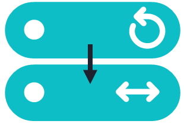

Suggested completion time: 30 minutes
No specific lab sheet section.
Before you make the change, run a quick test conference with a VMR where multiple users connect to the Edge node. Note how this looks in live view: both call legs are terminated on the Edge node.
Change the Pexip Transcoding Edge Node into a Proxying Edge Node:
Note the Warning that appears to tell you that the location that contains the Edge Node, now contains no transcoding resource. We need to update this location so that it can use a resource elsewhere.
Change the DMZ Location to use the transcoding resource of the LAN Location:
Re-run the test calls into the VMR using some endpoints connecting to the Edge node. Each group member can create a WebRTC call via the Edge node from your laptop (outside of the RDP session), although there is a virtual camera added to the RDP server (unfortunately, this flickers when multiple people use it, but it should be sufficient for testing). Note how the calls are now handled by this node in Live View – the call legs are proxied to the internal transcoding location, where the media is mixed.
Grab some screenshots of the updated Live View and status pages of the location showing the change in the role of the Edge node, for example:
Screenshot of main Live View showing the updated DMZ node in the Proxying Edge role:
Screenshot of the System Locations status page showing the transcoding resources defined for each location: